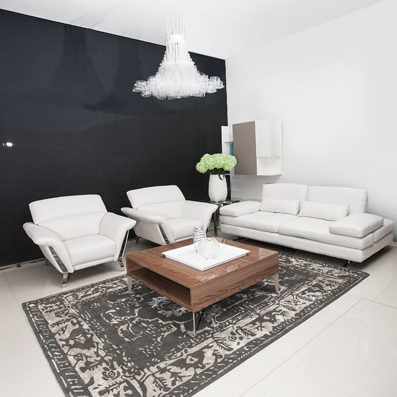

<div class="row">
    <div class="col-sm-12">
        
        <div class="row">
            <div class="col-xs-12">
                <h2 class="title-blog">¿QUE TIPO DE MATERIAL PARA TU SOFA? ¿CUERO O TELA?</h2>
                <p class="text-justify">Esta decisión es muy importante para nuestro hogar, ya que el sofá se convierte en la zona de descanso, recreación
                    y esparcimiento para la familia. Además debe ser estáticamente adecuado para el espacio, pero es allí
                    donde entra la gran pregunta; ¿sofá de tela o sofá de cuero?
                </p>
                <p class="text-justify"> Si bien lo sabemos el sofá dura mucho tiempo en nuestro hogar, por lo que es un compra importante y determinante,
                    ya que tiene muchos factores a considerar: la comodidad, el diseño, la resistencia, entre otros; por
                    eso queremos mostrar algunos pros y contras entre tela y cuero para tapizar tu sofá y que tomes la mejor
                    decisión.
                </p>
                <p class="text-justify">Empecemos con el sofá de cuero: En cuanto al estilo el cuero siempre dará un aire moderno, sin desconocer
                    la elegancia que transmite gracias a sus acabados, para personas con estilos minimalistas y contundentes
                    este material apunta muy bien para ellos.
                </p>
                <p class="text-justify"> Por otra parte el cuero tiene un plus con la limpieza, ya que con pasar un paño se mantiene limpio, además
                    de que no absorbe manchas. El cuero además conserva su forma con más precisión.
                </p>
                <p class="text-justify">Si vamos más a profundidad, los sofás de cuero son muy útiles para las personas con alergias, ya que no almacenan
                    polvo.
                </p>
                <p class="text-justify">El otro material que está considerado para los sofás es la tela; suele ser un material más suave que puede
                    percibirse mucho más cómodo, además de ser ideal para quienes buscan versatilidad o tienen un estilo
                    más dinámico.
                </p>
                <p class="text-justify">La tela además deja circular más la temperatura, por lo que no habrá sensación pegajosa en los días de calor.
                </p>
                <p class="text-justify">Si en el momento de buscar tu sofá quieres más variedad, la tela ofrece más colores y diseños que el cuero,
                    por lo que el estilo en este caso es crucial en la decisión.
                </p>
                <p class="text-justify">Estas son algunas de las consideraciones a tener en cuenta para tu decisión, asegúrate de que tu estilo y
                    personalidad sean siempre lo que prime en el momento de la compra de tu sofá.
                </p>
            </div>
        </div>
        <div class="row">
            <div class="col-sm-6">
                
            </div>
            <br class="visible-xs">
            <div class="col-sm-6">
                
            </div>
        </div>
        <div class="row">
            <div class="col-xs-12">
                <h3>Para tener en cuenta en el momento de escoger un sofá</h3>
                <p class="text-justify">En el momento de escoger un sofá muchas cosas se nos vienen a la cabeza, consideramos muchos detalles que
                    a veces van más allá de un simple diseño. Hay algunas consideraciones que debemos tener en cuenta para
                    quedar a gusto con nuestra decisión. Cuando quieras elegir el sofá soñado debes tener siempre presente
                    que el diseño y la funcionalidad deben ir de la mano para crear una solución ideal.</p>
                <p class="text-justify">La principal característica de un sofá debe ser la ergonomía, esta propiedad se adapta según la situación
                    o necesidad. Algunos sofás tienen como plus que su principal fortaleza es la comodidad, pues tienen por
                    ejemplo como valor agregado su espaldar reclinable, para conseguir una postura más cómoda.</p>
                <p class="text-justify">La profundidad (medida) del asiento, altura del espaldar, material del relleno, textura del tapizado, son
                    las consideraciones más importantes para un sofá. La sala se conforma de muchos elementos, pero sin duda
                    el sofá es la principal pieza, ya que es el más imponente y el que da los parámetros para los demás componentes.
                    Por eso para decorar tu espacio parte del sofá, pues será el punto focal de tu espacio.</p>
                <p class="text-justify">No se puede desconocer que hay algunos modelos más cómodos o acogedores que otros, pero debemos tener en
                    cuenta que las necesidades de cada persona son distintas, ya que nos basamos en nuestros gustos para
                    elegir la mejor opción.</p>
                <p class="text-justify">En Matisses nos enfocamos en proporcionar sofás diseñados y fabricados en Italia, con la mejor calidad y
                    ergonomía, para reunir un conjunto adecuado de atributos que ofrecen un producto detallado que lo hacen
                    exclusivo y práctico, este tipo de productos siempre están en la búsqueda constante del equilibrio para
                    garantizar la mejor experiencia.</p>
            </div>
        </div>
        <recommended></recommended>
    </div>
</div>